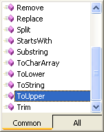

String Manipulation in VB .NET
Humans are far from perfect. Especially when they are entering data into textboxes! Sometimes they won't enter any details at all in the boxes you want them to. And then when they do enter something, they often get it wrong. Sometimes on purpose, just to trip you up. By manipulating Strings of data, we can check things like text in a textbox to see if it is correct, and thereby gain some control of the user's actions.
First, let's take a closer look at the String variable type.
The String Variable Type
There's more to the string variable type than meets the eye. You've used them a lot to store text. But the string variable types come with a lot of inbuilt power. Strings have their own properties and methods, just like a textbox or label or form does. That's because strings are objects. (In fact, all variables are objects in VB.NET, including the number variables.) In a later section, we'll be going into a bit more detail on objects. For now, think of them as things that can be manipulate - Like the textbox, label and form just mentioned.
And strings variables can be directly manipulated, too. An example should clear things up.
- Start a new project.
- Add two textboxes and a button to your new form.
- For Textbox1, set the Text property to “string variables”.
- Double click the button to open the coding window.
- Type the following as the code for the button:
Dim strUpper As String
strUpper = TextBox1.Text
TextBox2.Text = strUpper.ToUpper( )
Run your code and see what happens when you click the button.
You should have found that the text from Textbox1 gets converted to uppercase letters.
The reason it gets converted is because we used the ToUpper method of the string variable. When you typed the full stop after the variable name, you probably saw this pop up box:

Simply double click the method you want, and it's added to your code.
strUpper.ToUpper( )
Notice that the name of the variable you want to do something with comes first. Then, after the full stop, you add the name of the method.
It's easy to guess what some of the methods do (like ToLower), but others are a bit more enigmatic (Like Substring).
In this section, we'll go through some of the string methods to see what they do, and how useful they can be in your code.
Before we start, here's a full list of the methods that a string variable can access (it's a bit long, so it gets its own window!):
The full list of String methods and properties (9K - needs javascript enabled)
Length and Chars on that list above are properties, and not methods. We'll be using these two, and they come in quite useful.
Manipulating data from a Text Box
You already know how to pass data from a Textbox into a variable. Just do this
Dim FirstName As String
FirstName = txtFirst.Text
Then whatever was in the Textbox you called txtFirst will get transferred directly to the String variable you set up. Once the data is in the variable, you can test it to see if it's the type of data you want. After all, the user could have entered numbers to try and trip you up. Or they could have left it blank.
- Add a new textbox to your form
- Change the Name property to txtFirst
- Add a second button to your form
- Set the Text property to whatever you want
- Double click the button and add the following code:
Dim FirstName As String
FirstName = txtFirst.Text
If FirstName = "" Then
MsgBox "Please enter your First Name in the text box"
Exit Sub
End If
In this code, we are passing whatever is in the text box directly to the variable called FirstName. We are then testing what is inside the variable with an If statement. We want to test if the user has actually entered something into the text box. If they've left it blank, we want to tell them to try again. We also want to exit the Subroutine. After all, if they got it wrong, we don't want to proceed with any code we might have written.
The way we are testing to see if the user has left the text box blank is this:
If FirstName = "" Then
We've put two sets of double quotes together. This signifies a string of text that is blank. If the user didn't enter anything at all, then our variable FirstName will contain a blank string. This is what we're testing for.
Run the programme and try it out. Don't type anything at all in the textbox, but just click the button. The message box should display.
Now, click inside the textbox. Hit the space bar three times. And then click the button. Did the Message box display?
So why didn't it? After all, there was nothing in the textbox. Isn't that an blank string? What was passed to the variable?
Well, when you press the space bar Visual Basic counts that as a text character. So when you press the space bar three times what is in the variable is this:
FirstName = " "
and not this:
FirstName = ""
The two are entirely different, according to Visual Basic. After all, you might have wanted three spaces!
So how can we check to see if there is anything at all in our textbox? How
do we defeat the user who has tried to fool us by hitting the space bar a number
of times?
In the rest if this section, you'll learn about the various ways you can use the String methods and properties to examine what a particular string contains. First up is the Trim method.